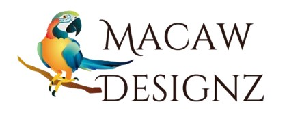

About Us
 Our online variety store was established to offer a wide range of products and services at reasonable prices. Our store began as a small, local endeavour. Starting with a passion for diverse, quality products and a commitment to personalized service, we transitioned to e-commerce to reach a wider audience.
Our online variety store was established to offer a wide range of products and services at reasonable prices. Our store began as a small, local endeavour. Starting with a passion for diverse, quality products and a commitment to personalized service, we transitioned to e-commerce to reach a wider audience.
Our store has expanded its offerings and embraced new technologies, all while maintaining the close-knit, customer-focused values that set us apart in providing custtom-made items that reflects the customer's style. Today, we continue to blend tradition with innovation, providing a broad selection of products with the same dedication and care that marked our beginnings.